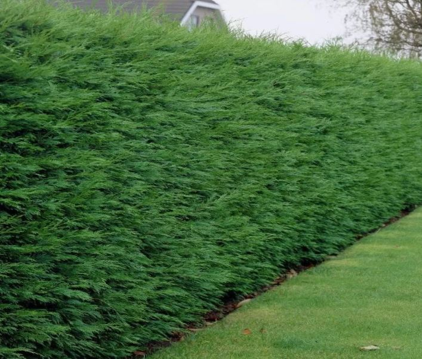
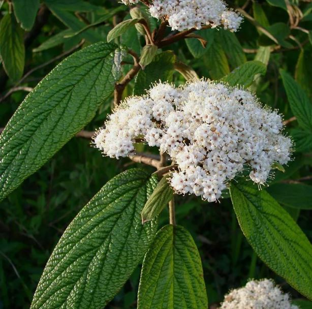

Top Lawn
Back to Home
Leylandii Cypress
Nature: Leyland cypress is a fast-growing evergreen tree hybrid of Monterey cypress and Nootka cypress.
Size: 30m
Habitat: Easy to grow in fertile soil in sun or partial shade.
Prune: Trim and shape as required in April, June and August, as long as cuts are confined to young green shoots.

Leather-leaved Viburnum - Viburnum rhytidophyllum
Nature: Leatherleaf viburnum (Viburnum rhytidophyllum) is one of a number of attractive viburnum shrubs. .
Size: 3-4.5m
Habitat: North–facing or South–facing or West–facing or East–facing
Prune: Once established, most evergreen shrubs are fairly low maintenance and need little or no regular pruning. Pruning, when required, is generally carried out in mid to late spring.

Juniper
Nature: evergreen tree.
Size: 4-8m
Habitat: North–facing or South–facing or West–facing or East–facing
Prune:

Pear tree
Nature: .
Size:
Habitat:
Prune: